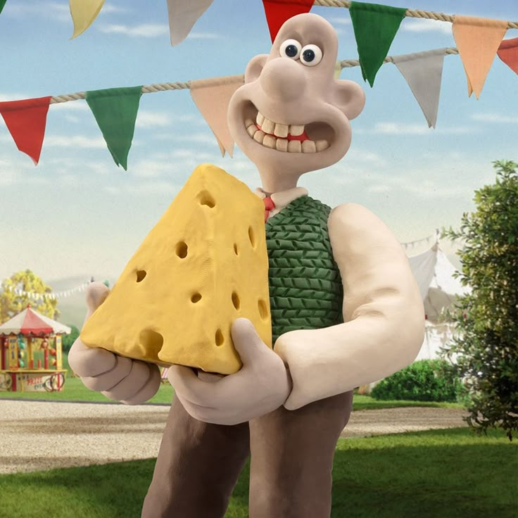
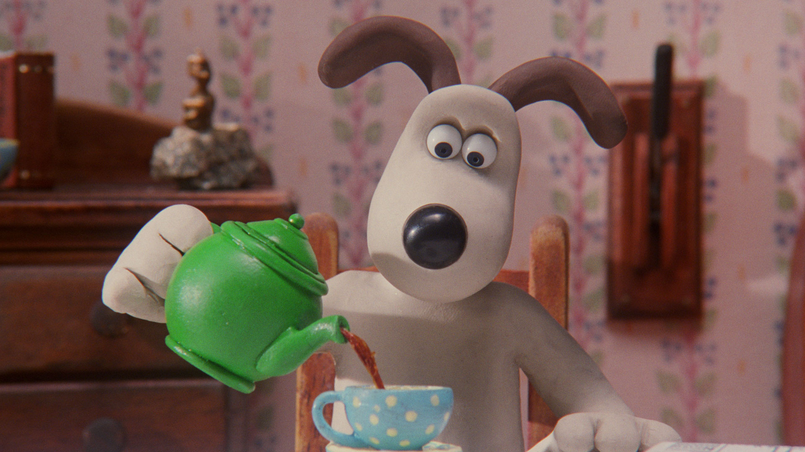

PERSONNAGES
Village Caché de la Feuille
Konohagakure

Wallace Uchiha
Inventeur
Inventeur génial et amateur de fromage, toujours prêt pour une nouvelle aventure.

Gromit Uzumaki
Chien Intelligent
Chien fidèle et intelligent, partenaire inséparable de Wallace dans toutes ses inventions.
Village Caché du Sable
Sunagakure
Prochainement
Les informations sur les ninjas de Sunagakure arrivent bientôt...
Village Caché du Son
Otogakure
Prochainement
Les informations sur les ninjas d'Otogakure arrivent bientôt...
Nukenin
Les Shinobis Renégats
Prochainement
Les informations sur les ninjas nukenin arrivent bientôt...